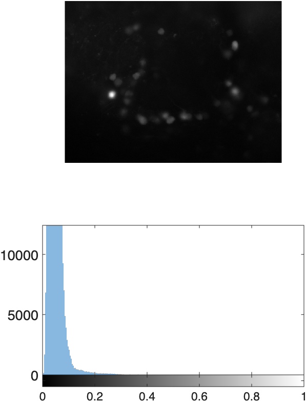
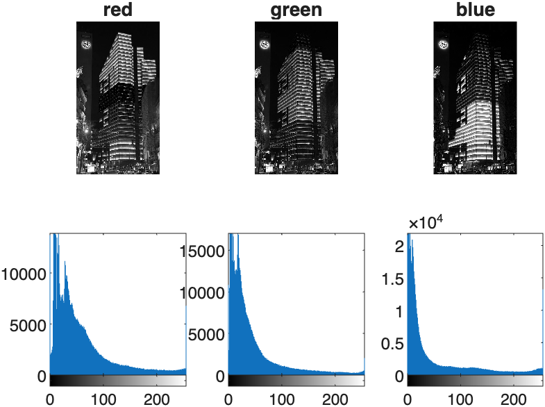
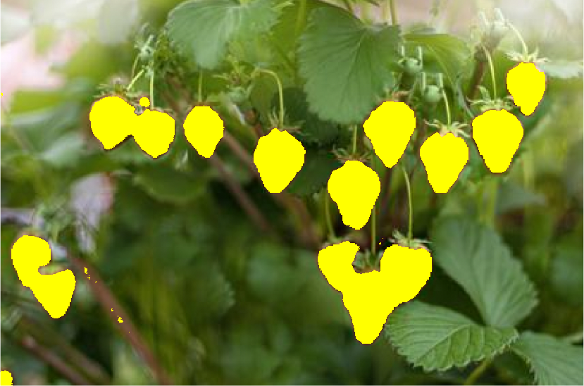
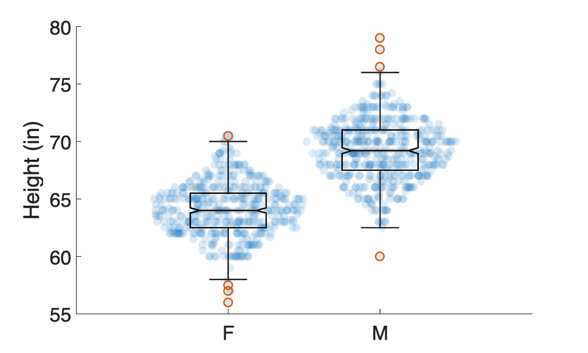
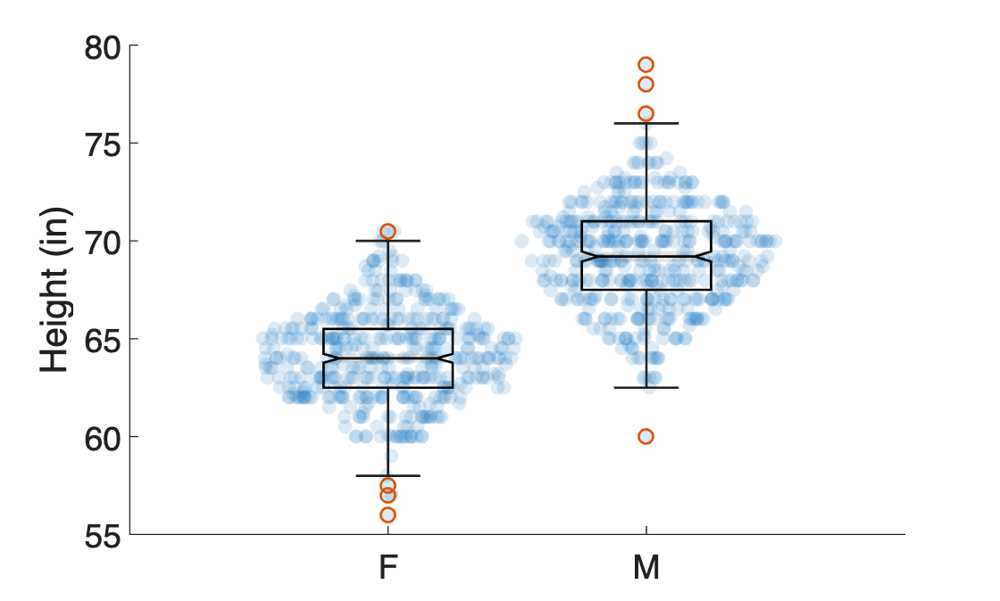
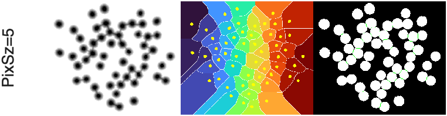
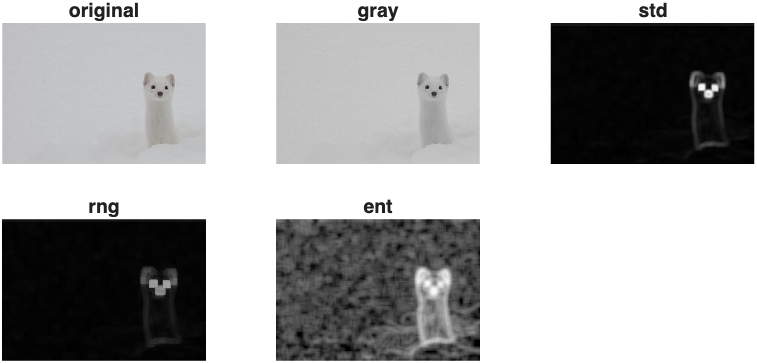

MtM Toolbox
The MtM toolbox is a collection of functions designed to simplify Plotting, Image Processing, Processing 3D Slicer segmentation volumes, working with Surface Meshes, and several other utility actions.
All MtM toolbox functions are prefaced with mm
Plotting Functions
mmShowHist
Tiles an image with its histogram in one figure. Image is display above the histogram (two row tiles per image). Corrects MATLAB inexplicable inability to pair nexttile with imhist by using subplot for tiling.

If you input an RGB image, this function will automatically index out the channels and display the histogram for each channel.

INPUTS
Required:
- img: an image matrix
Optional:
- col (default = 1): current column position
- num_cols (default = 1): total number of columns in the figure.
- title_str (default = empty): a string to title the image
- add_color (logical = false): if true add color
| Examples | |
|---|---|
mmShowBurnImage
Burns a mask onto an image. Wrapper for imoverlay but with syntax similar to imshowpair.

INPUTS
- img: a grayscale or rgb image
- mask: a binary mask
OPTIONS
- color: the color of the burned image (default = yellow)
mmShowStruct
Displays any images packaged in a structure as a tiled figure. Useful for reviewing image processing steps.
INPUTS
- S: a structure contain fields with image variables
- fn2display: cell array or string array specifying the structure field names to display
- titles (optional): string array of titles for plots
| Examples | |
|---|---|
mmBoxSwarm
A wrapper for swarmchart and boxchart that overlays a swarm chart on a box chart.
 

INPUTS
- x: (Optional) Enter empty brackets to generate a series of ones
- y: Vector of Numeric ata
Options
- PlotType: enter 'violin' for a violin plot (default is 'swarm')
- XAxVisible: display x-axis (default = 'off')
- MarkerFaceColor: set marker face color
- MarkerFaceAlpha: set marker face alpha (default =0.25)
- doBoxPlot: overlay boxplot (default is true)
- BoxFaceColor: set boxplot face color
- BoxFaceAlpha: set boxplot face alpha (default = 0.1)
- Notch: Turn on box plot notch (default = 'off')
- XJitterWidth set jitter width of swarm chart (default = 1)
| Examples | |
|---|---|
mmAddScaleBar
Adds a scalebar to current image
INPUTS
- ax: the handle to the axis where you want to add your scale bar
- width: the length of the scalebar
- widthPERpixel: the dimensions of a pixel side (e.g. um per pixel)
Optional inputs
- Color: the color of the scale bar
- Line Thickness: thickness of the scale bar (in points)
- pos: a row vector containing the X and Y coordinates where you want the scale bar. You can enter empty brackets to skip
- unit: a character array indicating the unit of measure. If inputted, the width of the scalebar will be printed above the bar
NOTE: the measurements don't have to be in microns. They just have
be consistent between width and widthPERpixel
Image Processing
mmGetWatershed
Performs the necessary steps for the watershed transformation of a mask. Based on this MATLAB blog

INPUTS
- BW: logical array (2D or 3D)
-
PixSz: Pixel Size of the extended regional minima inside the blobs being separated. The smaller the value, the smaller the extended regional minima - see imextendedmin Optional
-
conn: connectivity - see imextendedmin
- ShowSteps: boolean - display watershed steps
Output
- BW: Watershed transformed Mask
| Examples | |
|---|---|
mmGetTextureFilters
Applies multiple texture filters to input image. Texture filters include standard deviation, range, and entropy.

Text Filters applied to an image of a Ferret and displayed using mmShowStruct
INPUTS
-
p: a structure that must contain a field called either 'rgb' or 'img'.
rgbshould be an rgb image.imgshould be a grayscale image. -
nhood: (optional) a neighborhood matrix (typically logical or array of ones).
OUTPUT
- p: updated structure containing four new fields: gray, std, rng, and ent
| Examples | |
|---|---|
mmReadImgND
This function uses the MATLAB Bio-formats toolbox to read in multidimensional image stacks.
REQUIREMENTS
The Bio-formats toolbox, bfmatlab, must be downloaded and added to the search path.
INPUTS (optional)
- file_path is a path to an image file. If you don't input a file path, you will be prompted for a path.
OUTPUTS
- IMGND: an XYZCT multidimensional array
- metadata: the metadata from the array in XML format
| Example | |
|---|---|
3D Slicer Functions
Functions to process segmentation volumes created in 3D Slicer. Requires the Mathworks Medical Toolbox.
All Slicer volumes should be loaded as medicalVolumes.
mmGetSlicerSegmentInfo
Returns a table containing the properties (e.g. name, color, etc.) of the segmentations found in a seg.nrrd file
-
Input: file path to a segmentation file
-
Output: a table with segmentation names, layer, label, and color values
| Example | |
|---|---|
mmGetSlicerSegmentInfoAll
Loads the metadata and Segmentation Properties from all Slicer segmentation files found in the same folder
Input
- filePath: file path to the folder containing segmentation files (
*.seg.nrrd)
Output
- T: Slicer Segmentation table. Contains information (name, color) about segmentations created in Slicer Segment Editor module
- contentT: Table containing information about the segmentation files
| Example | |
|---|---|
mmGetMedicalVolumeSegment
Indexes out a segment from a Slicer Segmentation volume loaded as a medicalVolume. The function returns a structure that contains the mask of the indicated segment, color, and transformation matrix of the selected segmentation. First load a Slicer Segmentation file using medicalVolume and the Slicer segmentation table using mmGetSegTable.
INPUTS
- mV (required): medicalVolume of a Slicer Segmentation dataset
- segT (required): table - table created by mmGetSlicerSegTable
- segName (optional): string - Name of Segment to return.
If segName not provided, you will be prompted to select one segmentation from the inputted segT table.
OUTPUTS
S: The function returns a structure with the following fields
- segName: Name of selected segment
- mask: binary mask of the selected segment
- color: color of the segmentation as set in Slicer
- tform: transformation matrix to properly orient segmentation
- spacing: Voxel spacing
- volume: calculated using
regionprops3.
| Example | |
|---|---|
mmPlotAllSeg
Wrapper function that plots all segmentations from a 3D Slicer segmentation volume. Options include Smoothing and decimation, and lighting.
INPUTS:
- Vol: 3D array
- segT: Table containing the following slicer info — Name, Layer, LabelValue, Color
OPTIONAL INPUTS. Enter empty brackets if skipping.
- new_figure: logical (default = true). Create new figure if true
- falpha: scalar (0-1, default = 0.5) - transparency of the faces
- smooth: boolean (default=false). True means Smooth volume
- affTrfm: 4X4 3D affinity transformation matrix (default = [], no transformation). Used to transform the vertices to match the orientation and size of the original volume.
OUTPUT
- hp: array of patch handles to surface plots
| Examples | |
|---|---|
Surface Functions
Functions to process and manipulate surface meshes. Many of these functions work well with the vertices field in a patch handle, allowing for real-time update of the surface plot.
mmPlotMask2Surface
Wrapper function that creates an isosurface from an input volume. Options include smoothing of the volume, decimation, and lighting. Default plots surface as a patch in one simple function call.
INPUTS
- BW: logical 3D array
Optional Inputs (in this order). Enter empty brackets if skipping.
- fcolor: character array (default = 'cyan') - facecolor of the isosurface.
- falpha: scalar (0-1, default = 0.5) - transparency of the faces
- lightEMup: boolean (default = true) - add lights to the scene. For multiple function calls, set to false for all calls, except the last one. Then set to true on the final call. Otherwise you'll add too many lights to the scene.
- report: boolean (default=false) - print a report of settings to command window
- smooth: boolean (default=false). True means Smooth volume
- decimator: decimation factor (0-1, default=0.15) of the generated surface
- affTrfm: 4X4 3D affinity transformation matrix (default = [], no transformation). Used to transform the vertices to match the orientation and size of the original volume.
OUTPUT
- hp: handle to patch
hp = mmPlotMask2Surface(BW);
hp = mmPlotMask2Surface(BW,fcolor='cyan');
hp = mmPlotMask2Surface(BW,fcolor='magenta',falpha=0.25, lightEMup=true, decimator=0.2);
tform = createScaling3d(Sseg.xyz)
hp = mmPlotMask2Surface(BW,'magenta',transform_mat=tform);
mmGetSurface
Generate a surface mesh of the inputted 3D volume. Returns a face-vertices structure.
INPUTS
- Vol: a 3D volume
- iv (numeric): isovalue from which to generate the surface
- decimator (0-1): amount by which to decimate the generated surface.
- use_fast_march (logical): Use the function
extractIsosurfaceto more quickly generate an isosurface. Default = true. - centerSurface (logical): Center the vertices to 0,0,0. Default = false
OUTPUT
- fv: a faces-vertices structure
- s: string reporting the decimation
REQUIREMENTS: Medical toolbox required for fast marching isosurface
mmPlotSurface
Wrapper function to patch. plots the input fv structure as a patch. Lights not added. Use
mmSetSurfacePlotProps to add lighting and correct aspect ratios
INPUTS
- fv: a faces-vertices structure (output from isosurface)
- fcolor: face color
- falpha: face alpha
OUTPUT
- hp: handle to the patch
| Example | |
|---|---|
mmAlignSurface2Axes
Transforms the vertices so that the direction of most variance is aligned to the x-axis. Based on this discussion.
INPUT:
- Vert: NX3 array of Vertices to be transformed
OUTPUTs
- Vert: Transformed vertices
- Vd: Variance
| Example | |
|---|---|
mmRotateSurfaceVertices
Rotate the vertices of a surface around the specified axis by the specified angle (in degrees).
INPUTS
- vertices: (matrix): Nx3 vertices
- ax (character array): axis around which to rotate — x, y, or z
- angl (scalar): angle (in degrees) to rotate
- centerVerts (logical): optional. Center Vertices around 0,0,0 prior to rotation
| Example | |
|---|---|
mmAlignSurfaces
Registers two point clouds using an iterative closest point algorithm. This function requires the Computer Vision Toolbox. The inputs and outputs of this function are a matrix of 3D coordinate points (xyz)
Inputs
- SurfFixed: NX3 vertices matrix of Fixed Surface
- Surf2Move: NX3 vertices matrix of Surface to be moved (registered to fixed surface)
Output
- Surf2Move: NX3 vertices matrix of registered surface
| Example | |
|---|---|
mmCalcSurfaceAreaFromMesh
This function will calculate the sum of all triangles in the mesh to calculate Surface area.
If P1, P2, and P3 are 3D coordinate vectors of the three respective vertices of some particular triangle, then its area is given by:
Adapted from this discussion
Apps
mmSliceView
A custom image stack viewer app. Can handle 3D and 4D image stacks. Can load Image Stacks and accompanying binary Masks
Benefits
- Relatively Responsive
- Quickly scrub through image using the mouse scroll wheel
- Turn on image contrast for each slice
- Simultaneously load an image stack and a mask — overlay the mask on each slice view
Utility Functions
mmSetFigPublication
Sets the default axes font to 16 and figure color to white
| Example | |
|---|---|
mmSetUnitDataFolder
Sets the current folder to the indicated unit data folder from the [MtMdata Shared Folder] (https://drive.mathworks.com/sharing/36f2e302-384d-4c4e-aa98-8e853c1051c0)(Must be at root level of MATLAB drive)
mmGetChannelMap
This function returns a color map (with 256 shades) of the indicated color
Input: a channel name, letter, or index Output: a colormap of the shade indicated by the input